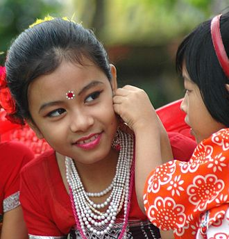
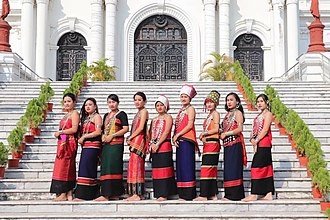
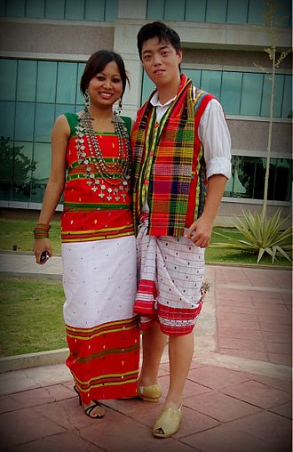
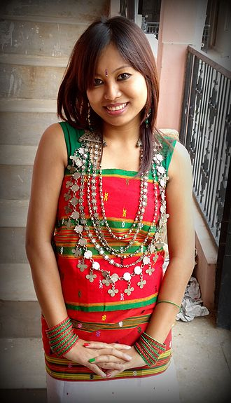

CULTURAL HERITAGE
The culture of Tripura is distinct and a bit similar to other people of Northeast India. However like Assam, Manipur, Burma and Southeast Asia culture of Tripura is characterized in small portion where people live in plain and hill areas. Tripura is a state in North East India. In the 2001 census of India, Bengalis represented almost 70% of the population and the Tripuri population comprised 30% of Tripura's population. The Tripuri population (indigenous population) comprises some clans and ethnic groups with diverse languages and cultures. The largest native group was the Tripuri who had a population of 543,848 in 2001 census,[1] representing 16.99% of the state population and 54.7% of the scheduled tribe population.[1] The other group of people in order of decreasing population were Chakma (6.5%), Halam (4.8%), Mog (3.1%), Munda, Kuki tribes and Garo Hajong.[1] Bengali is the most spoken language, due to the dominance of Bengali people in the state. Kokborok (Tripuri/Tiprakok) is a common language among Tripuris and lingua franca in Tripura. Several other languages belonging to Indo-European and Sino-Tibetan families are spoken by the different tribe

Children in Tripura prepare for a traditional dance.

Tripura girls in their traditional attire

Tripuri couple in traditional dress

A Tripuri girl in 'Rigwnai' and 'Risa'
Tripura has several diverse ethno-linguistic groups, which has given rise to a composite culture. The dominant cultures are Tripuris who are:[2] Tripura, Debbarma, Jamatia, Reang, Noatia, Koloi, Murasing, Rupini Uchoi, and tribes like Chakma, Halam, Garo, Hajong, Kuki, Mizo, Mogh, Munda, Oraon, Santhal.
Know More about the State